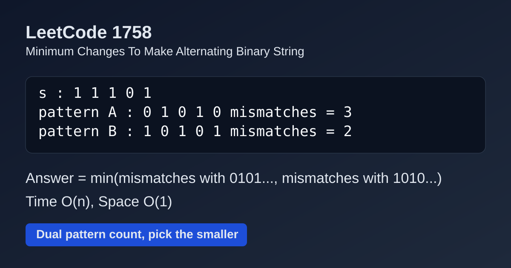

LeetCode 1758: Minimum Changes To Make Alternating Binary String (Dual Pattern Count)
LeetCode 1758StringGreedyToday we solve LeetCode 1758 - Minimum Changes To Make Alternating Binary String.
Source: https://leetcode.com/problems/minimum-changes-to-make-alternating-binary-string/

English
Problem Summary
Given a binary string s, change the minimum number of characters so the final string is alternating (no adjacent equal bits).
Key Insight
Only two valid alternating targets exist for length n: starting with '0' (0101...) or starting with '1' (1010...). Count mismatches to both, return the smaller one.
Algorithm
- Traverse index i from left to right.
- For pattern 0101..., expected char is ('0' if i%2==0 else '1').
- Count mismatch as diff0. Then diff1 = n - diff0 (opposite pattern).
- Answer is min(diff0, diff1).
Complexity Analysis
Time: O(n).
Space: O(1).
Reference Implementations (Java / Go / C++ / Python / JavaScript)
class Solution {
public int minOperations(String s) {
int diff0 = 0;
for (int i = 0; i < s.length(); i++) {
char expected = (i % 2 == 0) ? '0' : '1';
if (s.charAt(i) != expected) diff0++;
}
return Math.min(diff0, s.length() - diff0);
}
}func minOperations(s string) int {
diff0 := 0
for i := 0; i < len(s); i++ {
expected := byte('0')
if i%2 == 1 {
expected = '1'
}
if s[i] != expected {
diff0++
}
}
if len(s)-diff0 < diff0 {
return len(s) - diff0
}
return diff0
}class Solution {
public:
int minOperations(string s) {
int diff0 = 0, n = (int)s.size();
for (int i = 0; i < n; i++) {
char expected = (i % 2 == 0) ? '0' : '1';
if (s[i] != expected) diff0++;
}
return min(diff0, n - diff0);
}
};class Solution:
def minOperations(self, s: str) -> int:
diff0 = 0
for i, ch in enumerate(s):
expected = '0' if i % 2 == 0 else '1'
if ch != expected:
diff0 += 1
return min(diff0, len(s) - diff0)var minOperations = function(s) {
let diff0 = 0;
for (let i = 0; i < s.length; i++) {
const expected = (i % 2 === 0) ? '0' : '1';
if (s[i] !== expected) diff0++;
}
return Math.min(diff0, s.length - diff0);
};中文
题目概述
给定二进制字符串 s，你可以修改字符，目标是让结果字符串相邻字符都不同，求最少修改次数。
核心思路
长度为 n 的交替串只有两种：0101... 和 1010...。统计 s 与第一种模式的错位数 diff0，第二种模式错位数就是 n-diff0，取较小值即可。
算法步骤
- 遍历每个下标 i。
- 若按 0101... 模式，期望字符为 i 偶数位 '0'、奇数位 '1'。
- 统计不一致次数得到 diff0。
- 返回 min(diff0, n-diff0)。
复杂度分析
时间复杂度：O(n)。
空间复杂度：O(1)。
多语言参考实现（Java / Go / C++ / Python / JavaScript）
class Solution {
public int minOperations(String s) {
int diff0 = 0;
for (int i = 0; i < s.length(); i++) {
char expected = (i % 2 == 0) ? '0' : '1';
if (s.charAt(i) != expected) diff0++;
}
return Math.min(diff0, s.length() - diff0);
}
}func minOperations(s string) int {
diff0 := 0
for i := 0; i < len(s); i++ {
expected := byte('0')
if i%2 == 1 {
expected = '1'
}
if s[i] != expected {
diff0++
}
}
if len(s)-diff0 < diff0 {
return len(s) - diff0
}
return diff0
}class Solution {
public:
int minOperations(string s) {
int diff0 = 0, n = (int)s.size();
for (int i = 0; i < n; i++) {
char expected = (i % 2 == 0) ? '0' : '1';
if (s[i] != expected) diff0++;
}
return min(diff0, n - diff0);
}
};class Solution:
def minOperations(self, s: str) -> int:
diff0 = 0
for i, ch in enumerate(s):
expected = '0' if i % 2 == 0 else '1'
if ch != expected:
diff0 += 1
return min(diff0, len(s) - diff0)var minOperations = function(s) {
let diff0 = 0;
for (let i = 0; i < s.length; i++) {
const expected = (i % 2 === 0) ? '0' : '1';
if (s[i] !== expected) diff0++;
}
return Math.min(diff0, s.length - diff0);
};
Comments